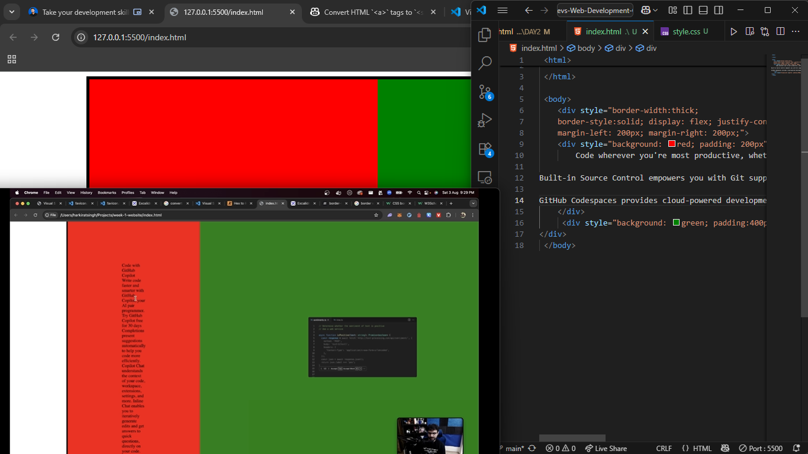

 <html>

 </html>

 <body>
    <div style="border-width:thick;
    border-style:solid; display: flex; justify-content:space-between;
    margin-left: 200px; margin-right: 200px;">
    <div style="background: red; "> hi from red
       <h1 Code wherever you're most productive, whether you're connected to the cloud></h1> a remote repository, or in the browser with VS Code for the Web (vscode.dev).

Built-in Source Control empowers you with Git support out-of-the-box. Many other source control providers are available through extensions.

GitHub Codespaces provides cloud-powered development environments for any activity - whether it's a long-term project, or a short-term task like reviewing a pull request.
    </div>
         <div style="background: green;" >
</div>
        </div>
 </body>